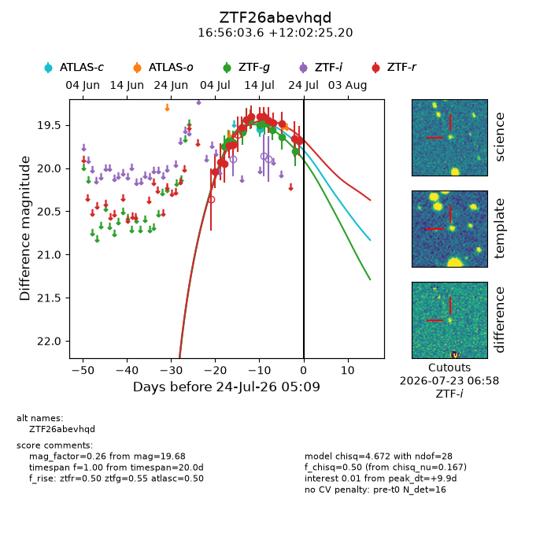
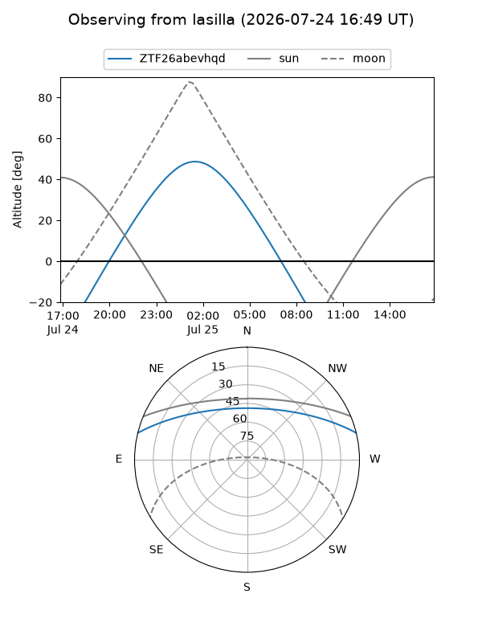
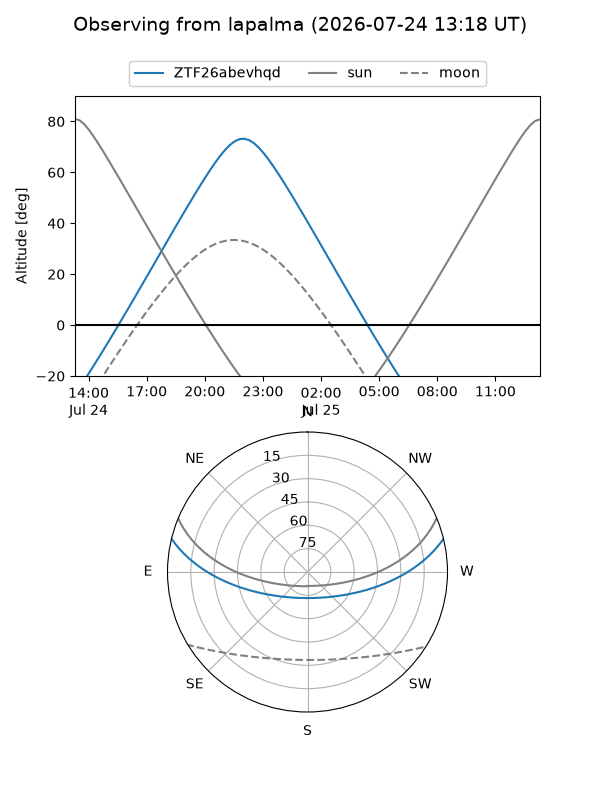
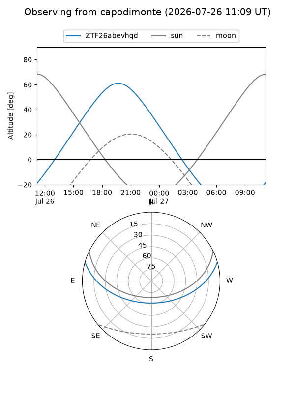
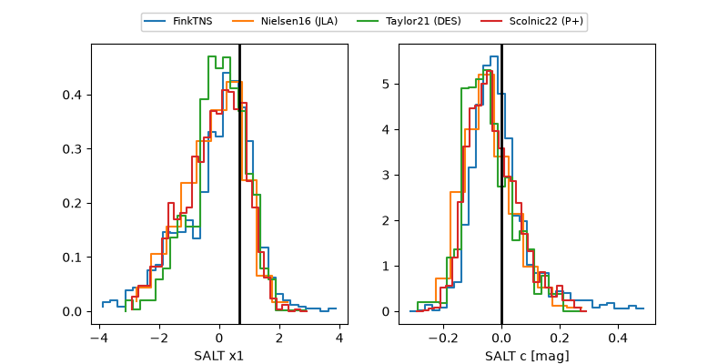

ZTF26abevhqd
Target ZTF26abevhqd at 2026-07-24 05:11
Aliases and brokers:
FINK-ZTF: ztf.fink-portal.org/ZTF26abevhqd
Lasair-ZTF: lasair-ztf.lsst.ac.uk/objects/ZTF26abevhqd
ALeRCE-ZTF: alerce.online/object/ZTF26abevhqd
Direct TNS query: direct search
alt names
ZTF26abevhqd (ztf,fink_ztf)
Coordinates:
equatorial (ra, dec) = 254.0149,+12.04033
equatorial (HMS+DMS) = 16:56:03.58,+12:02:25.20
galactic (l, b) = (30.9602,+30.99974)
Flags:
peak dt: +9.9
Photometry:
last atlasc=19.55, ztfg=19.80, ztfr=19.68
1 atlasc, 12 ztfg, 15 ztfr detections
Lightcurve

Visibility



Additional plots
